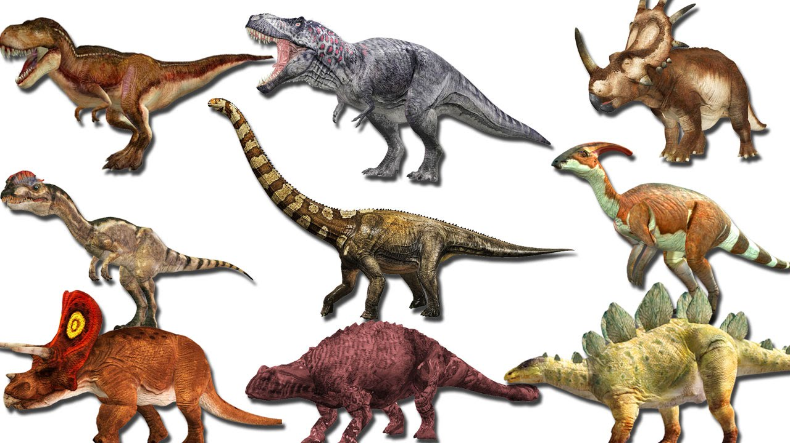

Dinosaurs of the Prehistoric World
Learn about these awesome dinosaurs
Learn about these awesome dinosaurs
You will learn about awesome dinosaurs like Allosaurus, T Rex, Stegosaurus and Brachiosaurus, where it lives, some features, height, weight, length and diet
Click on this link to goto Brainpop website
brain popQuick Facts
The largest dinosaur is Argentinosaurus
The dinosaur with the longest name is Micropachycephalosaurus
The fastest dinosaur was velociraptor
Did you know dinosaurs lived in antarctica?
No one knows what colors dinosaurs were!
The country with the most dinosaurs is USA
Dinoaurs were extinct about 65 million years ago
Few of my favorite dinosaurs
- Velociraptor
- T-Rex
- Brachiosaurus
- Allosaurus
- Deinonychus
Allosaurus
Height and length: 6ft high and 20ft long
Diet: Meat
Range: West Central USA
Weight: 1.5 tons
Features: Allosaurus was a big muscular dinosaur with a good sense of smell and sight with 3 claws. It also had 2 bony horns.Allosaurus lived in the Jurassic Period

Stegosaurus
Height and length: 4ft high and 16ft long
Diet: Plants
Range: West Central USA
Weight: 5 tons
Features: Stegosaurus was a short but bony dinosaur with 10 plates on its back to regulate its body temparature. It also had 4 spikes on its tail, that can be whipped around to protect itself. It had a walnut sized brain.Stegosaurus lived in the Jurassic Period

T-Rex
Height and length: 8ft high and 28ft long
Diet: Meat
Range: West Central USA and Western Canada
Weight: 9 tons
Features: T-Rex was the 3rd largest meat eater amongst its peers only behind Giganotosaurus and Spinosaurus. It had the best sense of smell and sight. Usually T-Rex would ambush its prey with its stealth. It had teeth as long as steak knives. It had very small arms used for nothing:)T-Rex lived in the Cretaceous Period

| Dinosaur Name | Dinosaur Diet | Dinosaur Range |
|---|---|---|
| Velociraptor | Meat | Mongolia and China |
| T-Rex | Meat | Northern USA and Canada |